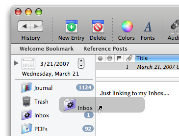

Explicity connecting entries, folders and media
 An entry's contents may include links to folders, other entries and media not part of the entry itself. There are a couple of ways to link an object from an entry. Drag and drop is a standard Macintosh paradigm which Journler supports wholeheartedly. Click once and hold the mouse down on a folder, an entry or an associated file. While holding the mouse button down, drag the item to the entry's contents. When you have best positioned the drag, let go of the mouse button. The drag completes and Journler links to the item or items, displaying the link in the Resource panel.Copy/paste also works when you want to link an enty to another object in your journal. For example, to link one entry to another, select the desired link from the Browse Table, making sure the table has focus. You will know it has focus when the selection highlight is blue instead of grey and the text is white. From the Edit menu choose Copy Link to Entry. Now choose another entry, deciding where in the text you want to create the link. Choose Paste from the Edit menu. Journler establishes the link and shows it in the Resource Panel.
With the link established, all you need to do is click on it or select the item from the Resource Panel. Journler jumps to the entry, folder or file if you click on the link and displays information about the item when you select it from the attachments list. Establishing explicit links is easy and an excellent way to connect your thoughts and documents with one another.
Links established by Journler when adding media to an entry
You can add just about anything to an entry: web pages, Address Book contacts, PDFs and documents of any other kind. When you add media to an entry, Journler looks at the media already in your database and checks for duplicates. If Journler finds you have already added this particular item to an entry, for example an Address Book record, Journler re-uses the resource representing that item instead of creating a new resource for it.Once a resource has been added to more than one entry it "knows" it is in use at multiple locations and shows the connection in the Resource Pane, allowing you to see the relationships between your entries established by the media they share. For more information refer to One Resource Many Entries.